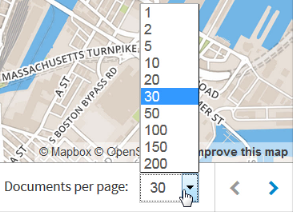

Experience IBM Cloudant Geospatial in Action
Provision the IBM Cloudant Service in Bluemix
Replicate the Sample Database
Review the HTTP API
Explore Geospatial Indexes
Explore Query Geometries
Examine an Application That Uses Cloudant Geospatial
Build a Location Tracker
Provision the IBM Cloudant Service in Bluemix
Follow these steps to provision the IBM Cloudant service.
- Visit IBM Bluemix at http://console.ng.bluemix.net.
- If you don't have a Bluemix account, click Sign Up. Complete the fields on the form, and click Create Account.
- If you have a Bluemix account, click Log In. Provide your IBMid and password, and click Log In.
- In the top navigation bar, click Catalog.
- In the left navigator, under Services, check Data and Analytics.
- Click Cloudant NOSQL DB.
- Accept the default service, or provide a different name, and click Create. This brings you to the IBM Cloudant Bluemix Service Launch Page.
- Click Service Credentials. Note your username, password, and host name. You will be able to use the URL (which also passes your username and password) to access your database from a browser.
- Paste the value for your host here:
- Click this button to update the URLs for the rest of this tutorial.
- Click Manage.
- Click Launch to load the Cloudant dashboard.
Replicate the Sample Database
The example database showcased in this tutorial contains crime incidents data in the Boston area.
- Click Replication tab.
- Click New Replication.
- Type
crimes_replicationfor the _id. - For the Source database, click Remote Database.
- For source database name, type
https://education.cloudant.com/crimes(the permissions are already set to allow anyone to replicate locally). - For the Target Database, click New Database.
- Click Local to create a local database in your account.
- Type
crimesfor the database name. - Ensure that the Make this replication continuous field is unchecked.
- Click Replicate Data.
- Provide the account password you saw back on the Service Credentials tab on Cloudant Bluemix Service Launch page, and click Continue Replication.
- A message displays stating “This replication has been posted to the _replicator database but hasn’t been fired yet. Check the _replicator DB to see its state.”
- Click the All Replications tab to see the replication request. The status is Triggered, and it may take a few minutes to complete.
- Click Completed Replications to see that it completed.
- Back on the Databases tab, verify that the crimes database displays in your list of databases. There are 272 documents in the database.
- Open the database to see the list of documents.
Review the HTTP API
Before we go any futher, let's review how Cloudant's HTTP API works. Cloudant employs an HTTP API, or RESTful Web service API. The Cloudant HTTP API follows this hierarchical model.
|
So, a URL for the Cloudant API is made up of an account name, the database within that account, and the endpoints to manipulate data within that database.
The following example references the ablanks account, the employee_directory database, and for all documents in the database, shows the document body. You could use this programmatically to populate a web page that shows all employees.
http://ablanks.cloudant.com/employee_directory/_all_docs?include_docs=true
Using a relational database, you would read and write data using a SQL command prompt. Since Cloudant is a NoSQL database, there is no SQL and no SQL command prompt, it leverages the HTTP API. It looks and feels more like you are interacting with a Web service than directly with a database.
You make HTTP requests using these verbs:
- GET
- PUT
- POST
- DELETE
- COPY
Typically, when you access the data from a browser, you are performing a GET; however, you can use browser add-on tools, such as PostMan or RESTClient, or a command line tool, such as cURL, to PUT, POST, DELETE, or COPY data.
Here’s an example of what a Clouant HTTP API command looks like. This cURL example executes a GET, passes the user credentials, and includes the base URI to access.
curl -X GET -u ablanks 'https://ablanks.cloudant.com/_all_dbs'Execute Basic API Commands
Try out these basic API commands.
- Back on the Cloudant dashboard, you have the Crimes database open.
- Click the API link, and then click View JSON to a list of all documents in the database. This URL uses the _all_docs endpoint on the crimes database:
- Add
?include_docs=trueto the end of the URL. This shows all of the contents of the documents: - Copy the first ID, and paste it in place of
_all_docs?include_docs=truein the URL. You would use this method to call a particular document by ID: - Remove
/crimes/<document-id>from the URL to see information about your account: - Add
/_all_dbsto the end of the URL to see a list of all your databases:
https://<account>.cloudant.com/crimes/_all_docs.
https://<account>.cloudant.com/crimes/_all_docs?include_docs=true
https://"<account>.cloudant.com/crimes/79f14b64c57461584b152123e38a58ca
https://<account>.cloudant.com
https://<account>.cloudant.com/_all_dbs
Explore Geospatial Indexes
You create a Geo Index by saving a JavaScript function in a _design document in the database. It’s a best practice to use a separate design document for Geospatial.
- From the Cloudant dashboard, open the crimes database.
- Open one of the documents to see the type of data stored in the document. If you’ve formatted your data as GeoJSON format, indexing is easy.
- Click Cancel to close the document.
- Click Design Documents. In this example, the design document _id is _design/geodd.
- Expand geodd.
- Expand Geospatial Indexes to see the geo indexes.
- Click the wrench next to geoidx, and then select Edit.
- Click beautify this code to see the index definition. The “index” function checks for a valid geometry object, and then runs the st_index function on doc.geometry.
function(doc){
if (doc.geometry && doc.geometry.coordinates && doc.geometry.coordinates.length >0) st_index(doc.geometry);
}
Query the Geospatial Index
You can query the Geo Index right from with the dashboard, and view the results right on the map or you can see the list of documents in the search results.
- Click Cancel to close the index definition.
- Click JSON to see a list of the documents in the search results.
- Click Map to see the document search results on a map.
- The API link provides you with the URL for the query. Click API.
- You can also click one of the points on the map, and then click Edit document to open the document for editing right from here.
Explore Query Geometries
There are several types of query geometries: rectangle, point, line, circle, and polygon.
Rectangle Geometry
Let's look at an example of a rectangle query which specifies the latitude and longitude of the lower left and upper right coordinates of the rectangle.
- Click Options.
- Click Rectangle.
- For the Lower Left Coordinates, specify:
- Lat:
42.35419922403036 - Lng:
-71.06982707977295 - For the Upper Right Coordinates, specify:
- Lat:
42.36456890762688 - Lng:
-71.05090141296387 - Click Run Query to view the map.
- Here you see the results of the documents within that bounding box displayed on the map. Use the zoom to see the entire rectangle.
- Click API, then click View JSON to see the URL used for the query. You can see that the rectangle query uses a bounding box relation query (bbox) similar to the query shown below.
https://<account>.cloudant.com/crimes-new/_design/geodd/_geo/geoidx?bbox=-71.06982707977295%2C42.35419922403036%2C-71.05090141296387%2C42.36456890762688&limit=30&relation=contains
Point Geometry
Here's an example of a point query.
- Back on the Cloudant dashboard, click Options.
- Click Point.
- For the coordinates, specify:
- Lat:
42.366326 - Lng:
-71.053493 - Deselect the Nearest neighbour option.
- Click Run Query to view the map.
There are no results found when you run this query because no crimes were reported at those coordinates. But really you want to see the crimes reported near that point, so you want to use the nearest neighbour option. - Click Options.
- Check Nearest neighbour.
- Click Run Query to view the map.
A nearest neighbour query returns the objects whose coordinates are closest to the point. The map is showing the 20 nearest locations using the number of documents per page setting to determine how many to show on the map, but you can change this setting. - Change Documents per page to 5.
- View the list of JSON documents to see the five crime incidents nearest to that location. Click JSON.
- Click Map.
- Click API, and then click View JSON to see the URL for this query which uses a point geometry type similar to the URL shown below.

https://<account>.cloudant.com/crimes/_design/geodd/_geo/geoidx?g=point%28-71.053493+42.366326%29&limit=5&nearest=true
Lines Geometry
For a line query, you need to specify at least 2 points.
- Back on the Cloudant dashboard, click Options.
- Click Lines.
- Click Add point.
- For the coordinates, specify:
- Lat:
42.3587500451248 - Lng:
-71.06289625167847 - Click Add point.
- For the coordinates, specify:
- Lat:
42.36039111403966 - Lng:
-71.05537533760071 - It makes sense to use the nearest neighbor option here, too, to find the 5 closest crime locations to the line.
- Click Run Query to view the map. It looks like there's only one document.
- Click JSON to see all five of the documents reporting crimes at that same location.
- Click Map.
- Click API, and then click View JSON to see the URL for this linestring query similar to the URL shown below.
https://<account>.cloudant.com/crimes/_design/geodd/_geo/geoidx?g=linestring(-71.06289625167847%2042.3587500451248%2C-71.05537533760071%2042.36039111403966)&limit=5&nearest=true
Circle Geometry
This example of a circle query specifies the coordinates for the center of a circle along with the radius of the circle, and returns a map with the reported crimes within the circle.
- Back on the Cloudant dashboard, click Options.
- Click Circle.
- For the coordinates, specify:
- Lat:
42.366326 - Lng:
-71.053493 - For Radius, type
500. - For Relation, select Contains.
- Click Run Query to view the map. In this case, there are only 3 reported crimes within that region.
- Click API, and then click View JSON to see the URL used in the query similar to the URL shown below.
https://<account>.cloudant.com/crimes-new/_design/geodd/_geo/geoidx?lat=42.366326&lon=-71.053493&radius=500&limit=5&nearest=true&relation=contains
Polygon Geometry
Lastly, you can use the drawing tools to form a polygon, such as, a triangle, quadrilateral, or pentagon.
- Back on the Cloudant dashboard, click the Draw a polygon icon, and draw a triangle. This query returns just one reported crime within the triangular region.
- Click Options.
- Select Polygon. While your points will be different than this example, you will see the three points that form a triangle, and the fourth point is the same as the first point in order to close the shape.
- Click Cancel.
- Click API, then click View JSON to see the URL for this polygon geometry type query similar to the URL shown below.
https://<account>.cloudant.com/crimes/_design/geodd/_geo/geoidx?g=polygon((-71.05879354450735 42.367375087380076, -71.05141210529837 42.367486063663705, -71.05707693073782 42.36022463074092, -71.05879354450735 42.367375087380076))&limit=5&relation=contains)
Cloudant Geospatial Relations
In Cloudant, geospatial relations are specified by the relation query parameter. So far, all of the examples have used "Contains". However, Cloudant Geo supports the following standard geospatial relations:
relation=contains&g=POLYGON ((-71.0537124 42.3681995 0,-71.054399 42.3675178 0,-71.0522962 42.3667409 0,-71.051631 42.3659324 0,-71.051631 42.3621431 0,-71.0502148 42.3618577 0,-71.0505152 42.3660275 0,-71.0511589 42.3670263 0,-71.0537124 42.3681995 0))Refer to the Geospatial Relationships section of the documentation for complete details on each of these relations.
Well-Known Text
'll notice that in the URL for polygon, point, and line queries, the geometry value is not in JSON format. Instead, it uses Well Known Text or Well Known Binary object. Well-known text (WKT) is a text markup language for representing vector geometry objects on a map, spatial reference systems of spatial objects, and transformations between spatial reference systems.
Well Known Text is less verbose, requires less formatting than JSON, and adheres to the Open Search specification which is why it is used in place of JSON when querying.
Refer to this Wikipedia article http://en.wikipedia.org/wiki/Well-known_text to see more about Well-Known Text. There are examples of each type of geometry: Point, LineString, Polygon, MultiPoint, MultiLineString, and MultiPolygon.
For example, you can use Well Known Text to specify the coordinates of a polygon. Then you specify the relationship between that geometry and the documents in your database. That relationship is usually “contains”, and the geometry is usually a polygon, because for most use cases, you want to retrieve all documents that are fully within a polygonal boundary. But other possibilities for relation and the g parameter exist.
View this URL to see an example of Well-Known Text.
https://education.cloudant.com/crimes/_design/geodd/_geo/geoidx?relation=contains&g=POLYGON ((-71.0537124 42.3681995 0,-71.054399 42.3675178 0,-71.0522962 42.3667409 0,-71.051631 42.3659324 0,-71.051631 42.3621431 0,-71.0502148 42.3618577 0,-71.0505152 42.3660275 0,-71.0511589 42.3670263 0,-71.0537124 42.3681995 0))Back to top
Examine an Application That Uses Cloudant Geospatial
Next, you’ll see an example of Cloudant Geospatial in action.
- Open the crimes database.
- Click Design Documents.
- Edit the _design/crimeclass document.
- You can attach files to a document which allows you to create a Couchapp right inside your Cloudant database. Click View Attachments.
- Click index.html to load that page. You'll use this page later on.
- Switch to the Cloudant dashboard tab, and click Cancel to go back to the list of documents.
- Click API, and then View JSON to see a list of all the documents in the crimes database.
- You can view the design document to see the Geospatial index. Replace
_all_docswith_design/geodd. - Next, query the Geospatial index by specifying a point and radius. Add the following text after
_design/geodd:
/_geo/geoidx?lat=42.357963&lon=-71.063991&radius=10000&limit=200&include_docs=true
The full URL will be:https://<account>.cloudant.com/crimes/_design/geodd/_geo/geoidx?lat=42.357963&lon=-71.063991&radius=10000&limit=200&include_docs=true
This query searches for documents containing geo location information within a 10,000 meter radius of the specified point.

https://<account>.cloudant.com/crimes/_all_docs
https://<account>.cloudant.com/crimes/_design/geodd
View Data on the Map
Now let’s see what the data looks like on a map. With geospatial data, it’s hard to make any sense of the results without seeing the spatial distribution, so you can use a popular open source JavaScript mapping client called Leaflet to preview your data. The web page attachments you saw earlier use Leaflet maps.
View the First Map
Follow these steps to view the first map.
- Return to the index.html page you opened earlier.
- Click the first link which shows 200 documents within 10,000 meters of the Boston State House.
- Right-click to view the HTML page source to see the CloudantURL used in the query. It's the same query you saw in the last procedure that is now displayed on the map.
View the Second Map
Now you could use Cloudant Geo’s abilities to look at all the crimes that occur along a specific street in Boston. This would be useful for a police department focusing on evaluating the effectiveness of a campaign to increase patrols along a certain street indicating an area of interest.
Follow these steps to view the second map.
- Go back to the index.html page, and click the second link which shows the Commercial Street Boundary.
- Right-click to view the HTML page source to find the ‘commst’ variable in the Javascript which describes a polygon in GeoJSON format. This polygon defines a boundary around Commercial Street in Boston, MA USA. Note: In a real world application, you might write code to generate polygons such as this one from a database.
View the Third Map
This next map visually combines the crimes with the Commercial Street corridor.
Follow these steps to view the third map.
- Go back to the index.html page, and click the third link which shows the Commercial Street SafeWalk corridor and last night's nearby crimes.
- Right-click to view the HTML page source to see the radius Geo query to Cloudant in the ‘cloudantURL’ variable, and the changed latitude and longitude values to center on Commercial Street.
View the Fourth Map
This next map limits the crimes query to the Commercial Street corridor.
Follow these steps to view the fourth map.
- Go back to the index.html page, and click the fourth link which shows the Commercial Street SafeWalk corridor and crimes in the corridor.
- Right-click to view the HTML page source. This time, you're taking that polygon defined in the ‘commst’ variable and putting it into the database query. You wouldn’t use a radius query, but instead query by polygon. You can’t copy the GeoJSON as-is into the query. You first need to translate it into Well-Known-Text (WKT) format, which is a standard that’s more URL-friendly. Once again, the magic happens in the “cloudantURL” variable.
That's the basics of using IBM Cloudant Geospatial!
Back to top(Optional) Build a Location Tracker Application
Important: This optional tutorial must be done using your own laptop.
As a next step, try completing the Location Tracker tutorial that shows you how to build an app that records the location and movements of mobile devices and shows it all on a map in real time. It's really two separate apps that work together to make magic:
- A mobile web app in HTML5 and JavaScript that records a mobile device’s location and saves it to Cloudant
- A mapping app that reads data from the Cloudant database to plot movements and show current positions
The tutorial requires a unix shell, native on MacOS laptops, and available through tools such as Cygwin on Windows laptops. If you are using a Windows laptop, and need to install Cygwin, follow these instructions, otherwise, skip to the Start the Tutorial section below.
Install Cygwin
- Create a
cygwinfolder, and download setup-x86.exe or setup-x86_64.exe to that folder. - At a command prompt, execute the following command in the c:\cygwin folder:
setup-x86_64.exe -q -P wget -P gcc-g++ -P make -P diffutils -P libmpfr-devel -P libgmp-devel -P libmpc-devel -P python-devel -P jq -P bash -P vim -P curl - Edit PATH.
- Click Control Panel->System->Advanced system settings->Environment Variables.
- For the Path variable, click Edit and add
c:\cygwin. - Copy
c:\cygwin\lib\python2.7andc:\cygwin\lib\python3.4toc:\cygwin\usrfolder.
(Optional) Install other tools
If you don't have an HTML editor, install Sublime text from here: https://sublimetext.com/2
Start the tutorial
Access the tutorial on github: https://github.com/cloudant-labs/location-tracker-couchapp/blob/master/tutorial/tutorial.adoc
Back to top